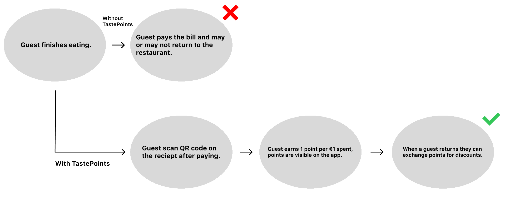
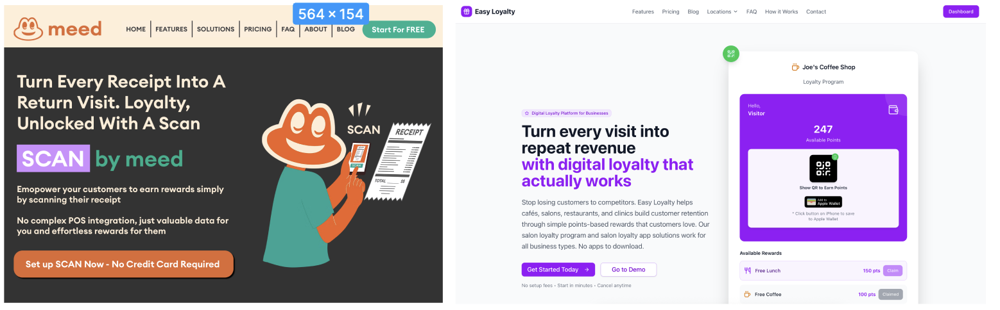
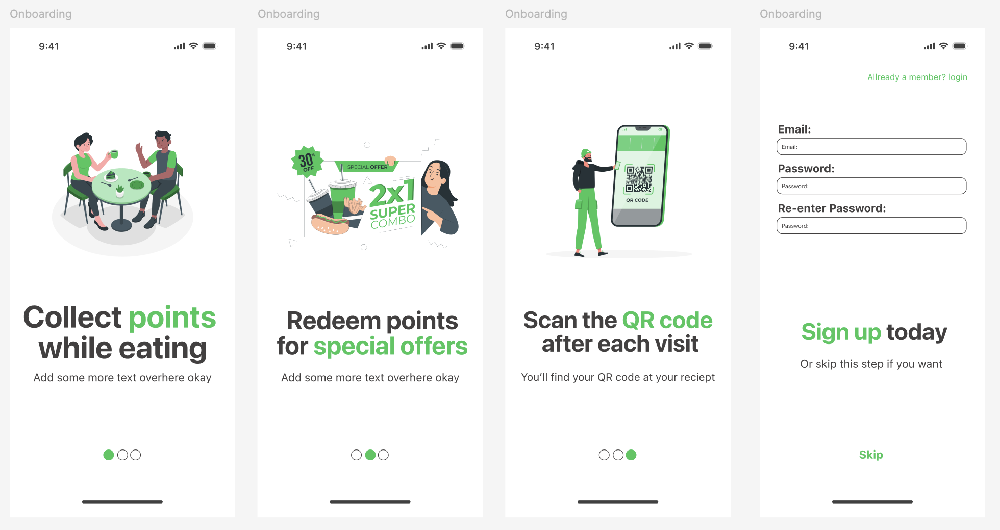
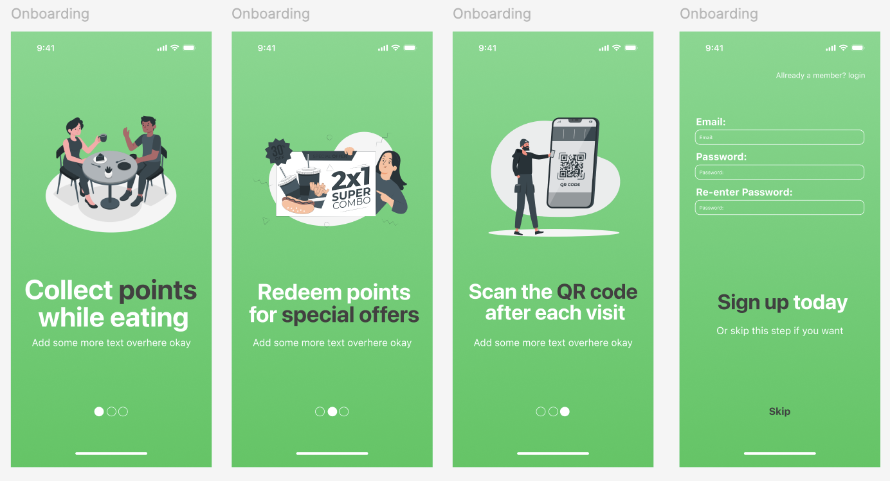
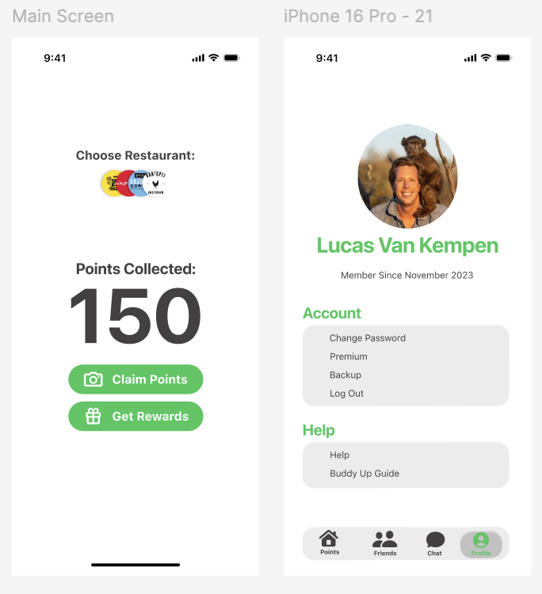

TastePoints:
I am working on an app concept which I would like to build outside of
school. Down below you can read the work I am doing.
“Guests earn points for every euro they spend at a restaurant. These
points will be collected and tracked on there mobile phone. These
points can later be redeemed for discounts or free items. This
incentivizes repeat visits and increases customer loyalty.”
Problem Definition:
Many restaurants find it hard to keep customers coming back. Old loyalty methods like paper stamp cards are easy to lose and don’t give restaurants any useful information about their customers. Most digital loyalty systems that exist today are too complicated or expensive for small restaurants. Because of this, guests don’t have an easy way to collect rewards for what they spend, and restaurants miss the chance to build strong, lasting relationships with them. To solve this, I want to create a free app for the user and restaurant. The app will have a simple UI and main feature will be to collect and redeem points at a local restaurant.
Flowchart:

Monetization:
The app will be free to download for the guests, and free to use for the restaurant. The app will also be 100% AD free. This will be all be done to make it as easy as possible to convince guests and restaurants to use the app. The monetization is within the redeeming of points. For each points that are redeemed, a percentage will be transferred to the app team.
Market and Competitors:
Apps like this already exist. I got this idea because at my previous job I saw this system already working. The problem over there was that almost nobody knew it existed because zero marketing was done, redeeming of points could only be done by the manager. They also didn’t have a app, I cannot remember how they did it but I assume it is trough a simple website. Beside this I also found these organizations:

USP:
What makes this unique compared to the rest is the simplicity. Where as some of these companies focus on a lot of other ICT features as well, and become big and expensive tools for restaurants, my app will only focus on 1 feature and 1 industry, and will be completely free to use.
Designs:



Future:
I created a working prototype at this point. For now I have to ask teachers if I can continue working on this during school hours.